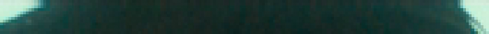

来自 A Silent Voice (2016)的前奏的脏线。鼠标移上去: 用ContinuityFixer和FillBorders修复。
你可能会遇到的一个更常见的问题是 "脏线"，这通常是在视频的边界上发现的，其中一排或一列的像素表现出与周围环境不一致的亮度值。通常情况下，这是由于不当的downscaling，例如在添加边框后downscaling。脏线也可能发生，因为压缩者没有考虑到他们在使用4:2:2色度子采样时（意味着他们的高度不必是mod2），消费者的视频将是4:2:0，导致额外的黑行，如果主片段没有正确放置，你就无法在裁剪时摆脱。另一种形式的脏线是在黑条上出现色度平面时表现出来的。通常情况下，这些应该被裁剪掉。然而，相反的情况也可能发生，即具有合法的 luma 信息的平面缺乏色度信息。
重要的是要记住，有时你的来源会有假行（通常被称为 "死"行），也就是没有合法信息的行。这些通常只是镜像下一行/一列。不要麻烦地修复这些，只需裁剪它们。一个例子:

同样，当你试图修复脏线时，你应该彻底检查你的修复没有引起不必要的问题，如涂抹（常见于过度热心的ContinuityFixer值）或闪烁（特别是在片头，在大多数情况下，建议从你的修复中省略片头卷）。如果你不能找出适当的修复方法，完全可以裁剪掉脏线或不修复。糟糕的修复比没有修复更糟糕
这里有五种常用的修复脏线的方法:
rektlvls
来自rekt。这基本上是AviSynth的 FixBrightnessProtect3 和 FixBrightness 的合二为一，尽管与 FixBrightness 不同，不是对整个画面进行处理。它的数值很直接。提高调整值是为了变亮，降低是为了变暗。将prot_val设置为None，它的功能就像FixBrightness，意味着调整值需要改变。
from rekt import rektlvls
fix = rektlvls(src, rownum=None, rowval=None, colnum=None, colval=None, prot_val=[16, 235])
如果你想一次处理多行，你可以输入一个列表 (例如 rownum=[0, 1, 2]).
为了说明这一点，让我们看看《寄生虫》（2017）的黑白蓝光中的脏线。寄生虫（2019）的底层行的黑白蓝光:
在这个例子中，最下面的四行有交替的亮度 与下两行的偏移量。所以，我们可以用rektlvls来提高 提高第一行和第三行的luma，然后再降低第二行和第四行的luma。在第二和第四行中降低。
fix = rektlvls(src, rownum=[803, 802, 801, 800], rowval=[27, -10, 3, -3])
在这种情况下，我们处于FixBrightnessProtect3模式。我们在这里没有利用prot_val的优势，但人们通常会使用这种模式，因为总有机会帮助我们。结果是:

深入功能讲解
InFixBrightness mode, this will perform an adjustment with
std.Levels on the desired row. This means that, in 8-bit,
every possible value \(v\) is mapped to a new value according to the
following function:
$$\begin{aligned}
&\forall v \leq 255, v\in\mathbb{N}: \\
&\max\left[\min\left(\frac{\max(\min(v, \texttt{max_in}) - \texttt{min_in}, 0)}{(\texttt{max_in} - \texttt{min_in})}\times (\texttt{max_out} - \texttt{min_out}) + \texttt{min_out}, 255\right), 0\right] + 0.5
\end{aligned}$$
For positive adj_val,
\(\texttt{max_in}=235 - \texttt{adj_val}\). For negative ones,
\(\texttt{max_out}=235 + \texttt{adj_val}\). The rest of the values
stay at 16 or 235 depending on whether they are maximums or
minimums.
FixBrightnessProtect3 mode takes this a bit further, performing
(almost) the same adjustment for values between the first
\(\texttt{prot_val} + 10\) and the second \(\texttt{prot_val} - 10\),
where it scales linearly. Its adjustment value does not work the
same, as it adjusts by \(\texttt{adj_val} \times 2.19\). In 8-bit:
Line brightening: $$\begin{aligned} &\texttt{if }v - 16 <= 0 \\ &\qquad 16 / \\ &\qquad \texttt{if } 235 - \texttt{adj_val} \times 2.19 - 16 <= 0 \\ &\qquad \qquad 0.01 \\ &\qquad \texttt{else} \\ &\qquad \qquad 235 - \texttt{adj_val} \times 2.19 - 16 \\ &\qquad \times 219 \\ &\texttt{else} \\ &\qquad (v - 16) / \\ &\qquad \texttt{if }235 - \texttt{adj_val} \times 2.19 - 16 <= 0 \\ &\qquad \qquad 0.01 \\ &\qquad \texttt{else} \\ &\qquad \qquad 235 - \texttt{adj_val} \times 2.19 - 16 \\ &\qquad \times 219 + 16 \end{aligned}$$
Line darkening: $$\begin{aligned} &\texttt{if }v - 16 <= 0 \\ &\qquad\frac{16}{219} \times (235 + \texttt{adj_val} \times 2.19 - 16) \\ &\texttt{else} \\ &\qquad\frac{v - 16}{219} \times (235 + \texttt{adj_val} \times 2.19 - 16) + 16 \\ \end{aligned}$$
All of this, which we give the variable \(a\), is then protected by (for simplicity's sake, only doing dual prot_val, noted by \(p_1\) and \(p_2\)):
$$\begin{aligned}
& a \times \min \left[ \max \left( \frac{v - p_1}{10}, 0 \right), 1 \right] \\
& + v \times \min \left[ \max \left( \frac{v - (p_1 - 10)}{10}, 0 \right), 1 \right] \times \min \left[ \max \left( \frac{p_0 - v}{-10}, 0\right), 1 \right] \\
& + v \times \max \left[ \min \left( \frac{p_0 + 10 - v}{10}, 0\right), 1\right]
\end{aligned}$$
bbmod
来自awsmfunc。 这是原BalanceBorders函数的一个模子。虽然它不能像rektlvls'那样保留原始数据，但在高blur'和thresh'值的情况下，它可以产生很好的结果，而且很容易用于多行，特别是具有不同亮度的行，rektlvls'就不再有用。如果它不能产生像样的结果，可以改变这些值，但是你设置得越低，这个函数的破坏性就越大。它也比havsfunc和sgvsfunc中的版本快得多，因为只有必要的像素被处理。
import awsmfunc as awf
bb = awf.bbmod(src=clip, left=0, right=0, top=0, bottom=0, thresh=[128, 128, 128], blur=[20, 20, 20], planes=[0, 1, 2], scale_thresh=False, cpass2=False)
The arrays for thresh and blur are again y, u, and v values.
It's recommended to try blur=999 first, then lowering that and
thresh until you get decent values.
thresh specifies how far the result can vary from the input. This
means that the lower this is, the better. blur is the strength of
the filter, with lower values being stronger, and larger values
being less aggressive. If you set blur=1, you're basically copying
rows. If you're having trouble with chroma, you can try activating
cpass2, but note that this requires a very low thresh to be set,
as this changes the chroma processing significantly, making it quite
aggressive.
For our example, I've created fake dirty lines, which we will fix:

To fix this, we can apply bbmod with a low blur and a high thresh,
meaning pixel values can change significantly:
fix = awf.bbmod(src, top=6, thresh=90, blur=20)

Our output is already a lot closer to what we assume the source
should look like. Unlike rektlvls, this function is quite quick to
use, so lazy people (i.e. everyone) can use this to fix dirty lines
before resizing, as the difference won't be noticeable after
resizing.
While you can use rektlvls on as many rows/columns as necessary, the same doesn't hold true for bbmod. Unless you are resizing after, you should only use bbmod on two rows/pixels for low blur values (\(\approx 20\)) or three for higher blur values. If you are resizing after, you can change the maximum value according to:
\[
max_\mathrm{resize} = max \times \frac{resolution_\mathrm{source}}{resolution_\mathrm{resized}}
\]
In-depth function explanation
bbmod works by blurring the desired rows, input rows, and
reference rows within the image using a blurred bicubic kernel,
whereby the blur amount determines the resolution scaled to accord
to \(\mathtt{\frac{width}{blur}}\). The output is compared using
expressions and finally merged according to the threshold specified.
The function re-runs one function for the top border for each side by flipping and transposing. As such, this explanation will only cover fixing the top.
First, we double the resolution without any blurring (\(w\) and \(h\) are input clip's width and height): \[ clip_2 = \texttt{resize.Point}(clip, w\times 2, h\times 2) \]

Now, the reference is created by cropping off double the to-be-fixed number of rows. We set the height to 2 and then match the size to the double res clip: \[\begin{align} clip &= \texttt{CropAbs}(clip_2, \texttt{width}=w \times 2, \texttt{height}=2, \texttt{left}=0, \texttt{top}=top \times 2) \\ clip &= \texttt{resize.Point}(clip, w \times 2, h \times 2) \end{align}\]
Before the next step, we determine the \(blurwidth\): \[ blurwidth = \max \left( 8, \texttt{floor}\left(\frac{w}{blur}\right)\right) \] In our example, we get 8.
Now, we use a blurred bicubic resize to go down to \(blurwidth \times 2\) and back up: \[\begin{align} referenceBlur &= \texttt{resize.Bicubic}(clip, blurwidth \times 2, top \times 2, \texttt{b}=1, \texttt{c}=0) \\ referenceBlur &= \texttt{resize.Bicubic}(referenceBlur, w \times 2, top \times 2, \texttt{b}=1, \texttt{c}=0) \end{align}\]

Then, crop the doubled input to have height of \(top \times 2\): \[ original = \texttt{CropAbs}(clip_2, \texttt{width}=w \times 2, \texttt{height}=top \times 2) \]

Prepare the original clip using the same bicubic resize downwards: \[ clip = \texttt{resize.Bicubic}(original, blurwidth \times 2, top \times 2, \texttt{b}=1, \texttt{c}=0) \]

Our prepared original clip is now also scaled back down: \[ originalBlur = \texttt{resize.Bicubic}(clip, w \times 2, top \times 2, \texttt{b}=1, \texttt{c}=0) \]
Now that all our clips have been downscaled and scaled back up, which is the blurring process that approximates what the actual value of the rows should be, we can compare them and choose how much of what we want to use. First, we perform the following expression (\(x\) is \(original\), \(y\) is \(originalBlur\), and \(z\) is \(referenceBlur\)): \[ \max \left[ \min \left( \frac{z - 16}{y - 16}, 8 \right), 0.4 \right] \times (x + 16) + 16 \] The input here is: \[ balancedLuma = \texttt{Expr}(\texttt{clips}=[original, originalBlur, referenceBlur], \texttt{"z 16 - y 16 - / 8 min 0.4 max x 16 - * 16 +"}) \]
What did we do here? In cases where the original blur is low and supersampled reference's blur is high, we did: \[ 8 \times (original + 16) + 16 \] This brightens the clip significantly. Else, if the original clip's blur is high and supersampled reference is low, we darken: \[ 0.4 \times (original + 16) + 16 \] In normal cases, we combine all our clips: \[ (original + 16) \times \frac{originalBlur - 16}{referenceBlur - 16} + 16 \]
We add 128 so we can merge according to the difference between this and our input clip: \[ difference = \texttt{MakeDiff}(balancedLuma, original) \]
Now, we compare to make sure the difference doesn't exceed \(thresh\): \[\begin{align} difference &= \texttt{Expr}(difference, "x thresh > thresh x ?") \\ difference &= \texttt{Expr}(difference, "x thresh < thresh x ?") \end{align}\]
These expressions do the following: \[\begin{align} &\texttt{if }difference >/< thresh:\\ &\qquad thresh\\ &\texttt{else}:\\ &\qquad difference \end{align}\]
This is then resized back to the input size and merged using MergeDiff back into the original and the rows are stacked onto the input. The output resized to the same res as the other images:
FillBorders
From fb. This function pretty much just copies the next column/row in line.
While this sounds, silly, it can be quite useful when downscaling
leads to more rows being at the bottom than at the top, and one
having to fill one up due to YUV420's mod2 height.
fill = core.fb.FillBorders(src=clip, left=0, right=0, bottom=0, top=0, mode="fixborders")
A very interesting use for this function is one similar to applying
ContinuityFixer only to chroma planes, which can be used on gray
borders or borders that don't match their surroundings no matter
what luma fix is applied. This can be done with the following
script:
fill = core.fb.FillBorders(src=clip, left=0, right=0, bottom=0, top=0, mode="fixborders")
merge = core.std.Merge(clipa=clip, clipb=fill, weight=[0,1])
You can also split the planes and process the chroma planes
individually, although this is only slightly faster. A wrapper that
allows you to specify per-plane values for fb is FillBorders in
awsmfunc.
Note that you should only ever fill single columns/rows with FillBorders. If you have more black lines, crop them! If there are frames requiring different crops in the video, don't fill these up. More on this at the end of this chapter.
To illustrate what a source requiring FillBorders might look like,
let's look at Parasite (2019)'s SDR UHD once again, which requires
an uneven crop of 277. However, we can't crop this due to chroma
subsampling, so we need to fill one row. To illustrate this, we'll
only be looking at the top rows. Cropping with respect to chroma
subsampling nets us:
crp = src.std.Crop(top=276)

Obviously, we want to get rid of the black line at the top, so let's
use FillBorders on it:
fil = crp.fb.FillBorders(top=1, mode="fillmargins")

This already looks better, but the orange tones look washed out.
This is because FillBorders only fills one chroma if two luma
are fixed. So, we need to fill chroma as well. To make this easier
to write, let's use the awsmfunc wrapper:
fil = awf.fb(crp, top=1)

Our source is now fixed. Some people may want to resize the chroma to maintain original aspect ratio performing lossy resampling on chroma, but whether this is the way to go is not generally agreed upon. If you want to go this route:
top = 1
bot = 1
new_height = crp.height - (top + bot)
fil = awf.fb(crp, top=top, bottom=bot)
out = fil.resize.Spline36(crp.width, new_height, src_height=new_height, src_top=top)
In-depth function explanation
FillBorders has four modes, although we only really care about mirror, fillmargins, and fixborders.
The mirror mode literally just mirrors the previous pixels. Contrary to the third mode, repeat, it doesn't just mirror the final row, but the rows after that for fills greater than 1. This means that, if you only fill one row, these modes are equivalent. Afterwards, the difference becomes obvious.
In fillmargins mode, it works a bit like a convolution, whereby for rows it does a [2, 3, 2] of the next row's pixels, meaning it takes 2 of the left pixel, 3 of the middle, and 2 of the right, then averages. For borders, it works slightly differently: the leftmost pixel is just a mirror of the next pixel, while the eight rightmost pixels are also mirrors of the next pixel. Nothing else happens here.
The fixborders mode is a modified fillmargins that works the same for rows and columns. It compares fills with emphasis on the left, middle, and right with the next row to decide which one to use.
ContinuityFixer
From cf. ContinuityFixer works by comparing the rows/columns specified to
the amount of rows/columns specified by range around it and
finding new values via least squares regression. Results are similar
to bbmod, but it creates entirely fake data, so it's preferable to
use rektlvls or bbmod with a high blur instead. Its settings
look as follows:
fix = core.cf.ContinuityFixer(src=clip, left=[0, 0, 0], right=[0, 0, 0], top=[0, 0, 0], bottom=[0, 0, 0], radius=1920)
This is assuming you're working with 1080p footage, as radius's
value is set to the longest set possible as defined by the source's
resolution. I'd recommend a lower value, although not going much
lower than 3, as at that point, you may as well be copying pixels
(see FillBorders below for that). What will probably throw off
most newcomers is the array I've entered as the values for
rows/columns to be fixed. These denote the values to be applied to
the three planes. Usually, dirty lines will only occur on the luma
plane, so you can often leave the other two at a value of 0. Do note
an array is not necessary, so you can also just enter the amount of
rows/columns you'd like the fix to be applied to, and all planes
will be processed.
As ContinuityFixer is less likely to keep original data in tact, it's recommended to prioritize bbmod over it.
Let's look at the bbmod example again and apply ContinuityFixer:
fix = src.cf.ContinuityFixer(top=[6, 6, 6], radius=10)

Let's compare this with the bbmod fix (remember to mouse-over to compare):
ContinuityFixer here.
This will rarely be the case, as `ContinuityFixer` tends to be more destructive
than `bbmod` already is.
Just like bbmod, ContinuityFixer shouldn't be used on more than two rows/columns. Again, if you're resizing, you can change this maximum accordingly:
\[
max_\mathrm{resize} = max \times \frac{resolution_\mathrm{source}}{resolution_\mathrm{resized}}
\]
In-depth function explanation
ContinuityFixer works by calculating the least squares
regression of the pixels within the radius. As such, it creates
entirely fake data based on the image's likely edges. No special explanation here.
ReferenceFixer
From edgefixer. This requires the original version of edgefixer (cf is just an
old port of it, but it's nicer to use and processing hasn't
changed). I've never found a good use for it, but in theory, it's
quite neat. It compares with a reference clip to adjust its edge fix
as in ContinuityFixer.:
fix = core.edgefixer.Reference(src, ref, left=0, right=0, top=0, bottom=0, radius = 1920)
Notes
Too many rows/columns
One thing that shouldn't be ignored is that applying these fixes (other
than rektlvls) to too many rows/columns may lead to these looking
blurry on the end result. Because of this, it's recommended to use
rektlvls whenever possible or carefully apply light fixes to only the
necessary rows. If this fails, it's better to try bbmod before using
ContinuityFixer.
Resizing
It's important to note that you should always fix dirty lines before
resizing, as not doing so will introduce even more dirty lines. However,
it is important to note that, if you have a single black line at an edge
that you would use FillBorders on, you should remove that using your
resizer.
For example, to resize a clip with a single filled line at the top to \(1280\times536\) from \(1920\times1080\):
top_crop = 138
bot_crop = 138
top_fill = 1
bot_fill = 0
src_height = src.height - (top_crop + bot_crop) - (top_fill + bot_fill)
crop = core.std.Crop(src, top=top_crop, bottom=bot_crop)
fix = core.fb.FillBorders(crop, top=top_fill, bottom=bot_fill, mode="fillmargins")
resize = core.resize.Spline36(1280, 536, src_top=top_fill, src_height=src_height)
Diagonal borders
If you're dealing with diagonal borders, the proper approach here is to
mask the border area and merge the source with a FillBorders call. An
example of this (from the Your Name (2016)):
Fix compared with unmasked in fillmargins mode and contrast adjusted for clarity:

Code used (note that this was detinted after):
mask = core.std.ShufflePlanes(src, 0, vs.GRAY).std.Binarize(43500)
cf = core.fb.FillBorders(src, top=6, mode="mirror").std.MaskedMerge(src, mask)
Finding dirty lines
Dirty lines can be quite difficult to spot. If you don't immediately spot any upon examining borders on random frames, chances are you'll be fine. If you know there are frames with small black borders on each side, you can use something like the following script:
def black_detect(clip, thresh=None):
if thresh:
clip = core.std.ShufflePlanes(clip, 0, vs.GRAY).std.Binarize(
"{0}".format(thresh)).std.Invert().std.Maximum().std.Inflate( ).std.Maximum().std.Inflate()
l = core.std.Crop(clip, right=clip.width / 2)
r = core.std.Crop(clip, left=clip.width / 2)
clip = core.std.StackHorizontal([r, l])
t = core.std.Crop(clip, top=clip.height / 2)
b = core.std.Crop(clip, bottom=clip.height / 2)
return core.std.StackVertical([t, b])
This script will make values under the threshold value (i.e. the black
borders) show up as vertical or horizontal white lines in the middle on
a mostly black background. If no threshold is given, it will simply
center the edges of the clip. You can just skim through your video with
this active. An automated alternative would be dirtdtct, which scans
the video for you.
Other kinds of variable dirty lines are a bitch to fix and require checking scenes manually.
Variable borders
An issue very similar to dirty lines is unwanted borders. During scenes with different crops (e.g. IMAX or 4:3), the black borders may sometimes not be entirely black, or be completely messed up. In order to fix this, simply crop them and add them back. You may also want to fix dirty lines that may have occurred along the way:
crop = core.std.Crop(src, left=100, right=100)
clean = core.cf.ContinuityFixer(crop, left=2, right=2, top=0, bottom=0, radius=25)
out = core.std.AddBorders(clean, left=100, right=100)
If you're resizing, you should crop these off before resizing, then add the borders back, as leaving the black bars in during the resize will create dirty lines:
crop = src.std.Crop(left=100, right=100)
clean = crop.cf.ContinuityFixer(left=2, right=2, top=2, radius=25)
resize = awf.zresize(clean, preset=720)
border_size = (1280 - resize.width) / 2
bsize_mod2 = border_size % 2
out = resize.std.AddBorders(left=border_size - bsize_mod2, right=border_size + bsize_mod2)
In the above example, we have to add more to one side than the other to reach our desired width. Ideally, your border_size will be mod2 and you won't have to do this.
If you know you have borders like these, you can use brdrdtct from awsmfunc similarly to dirtdtct to scan the file for them.